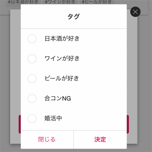

tipsysのある生活

仕事が早く終わったから、遊びにいきたい！
そんな時に。
Twitterのようにつぶやいたら、みんなが見てくれるので「今からいけるよ」「詳細教えて！」とメッセージが飛んでくることも。
検索機能から
気が合う人を見つけて一緒に遊びにいこう
プロフィールを公開してる全ユーザから気が合いそうな人を探すことができます。


無料で
メッセージのやりとりができるから安心
一部のソーシャルサービスではメッセージするのは有料だったりしますが、tipsysはメッセージの交換は無料。安心してやりとりしてください。 ※スパム対策のために一日に大量のメッセージを送ることはできません